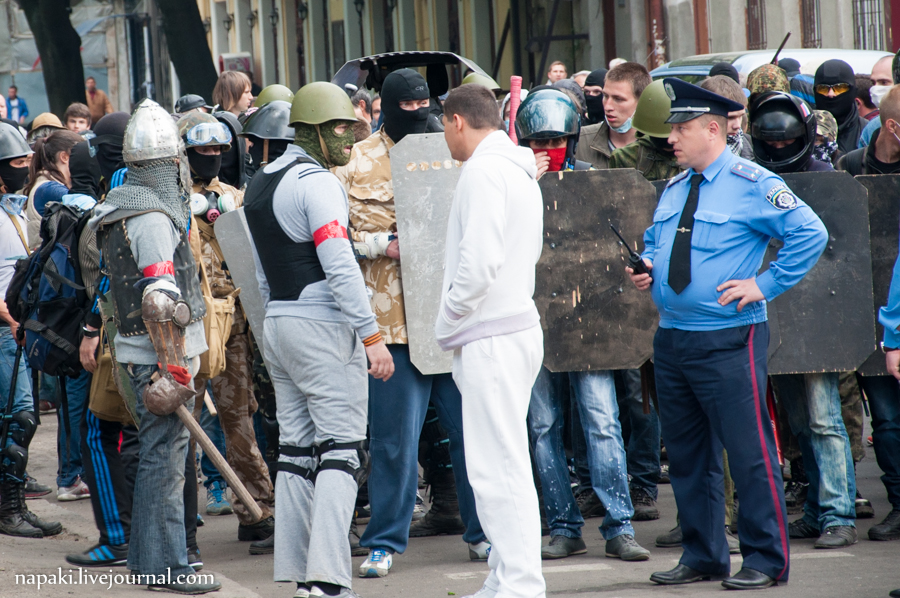
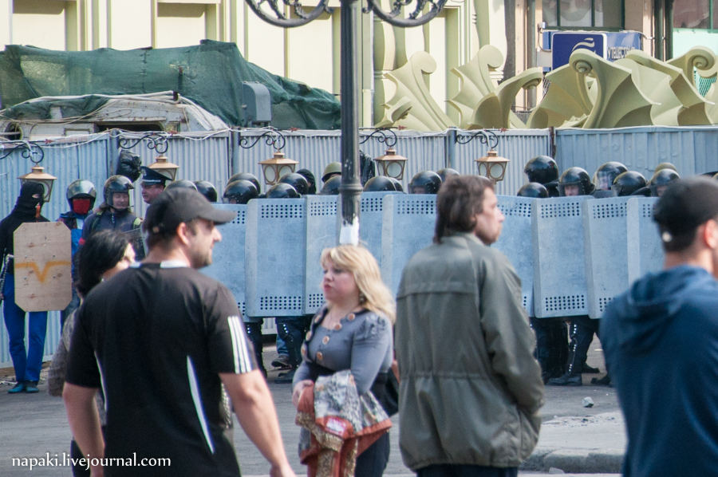
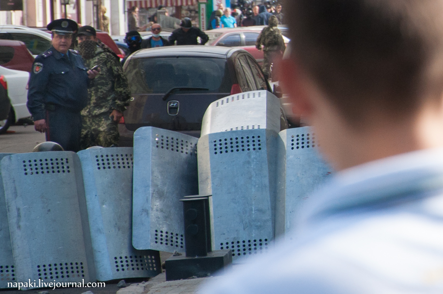
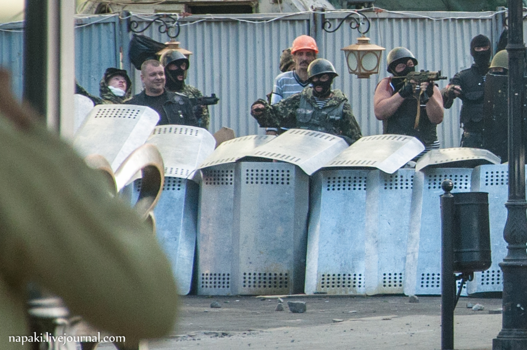
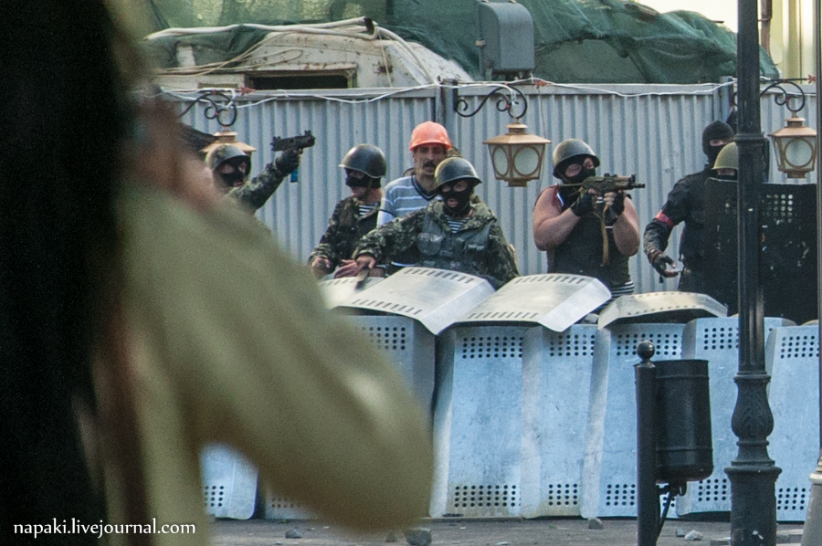
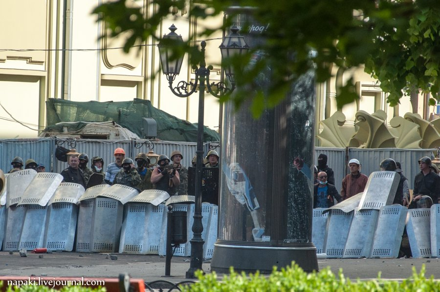
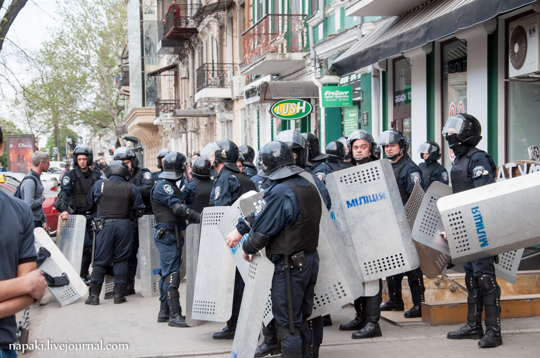

Неправда от Тимошенко: милиция сделала все возможное для защиты людей в Одессе
Экс-премьер и кандидат в президенты Украины Юлия Тимошенко 3 мая, на следующий день против кровавых событий в Одессе, в результате которых погибли более сорока людей, заявила, что не видит в этом вины милиции.
«Я также хотела бы остановиться на том, что сегодня милицию обвиняют в бездеятельности, в том, что они не приложили всех усилий для того, чтобы не допустить такого конфликта.Да, я убеждена, что милиция может и должна делать больше.Но мы также не можем сейчас недооценить, что милиция защищала мирных гражданских людей, которые принимали участие в демонстрациях и на эту минуту 22 милиционера ранены.Это говорит о том, что они активно принимали участие в том, чтобы прекратить те агрессивные террористические действия, которые российские спецслужбы применяли против наших мирных демонстрантов, что милиция боролась так, как она могла бороться», — заявила она.

Однако свидетельства с места событий говорят об обратном.Милиция не пыталась задерживать вооруженных людей на улицах и не пыталась вмешиваться в противостояние.Более того, милиция содействовала вооруженным сепаратистам, когда те, стоя в одном ряду с милиционерами и прячась за их спинами, вели огонь по проукраинским демонстрантам.
В результате этой стрельбы погибли несколько человек, что и стало причиной основного конфликта на Куликовом поле и в Доме профсоюзов, именно после этого проукраинские демонстранты пошли сносить палаточный городок.
Вот свидетельства очевидца событий: http://napaki.livejournal.com/100072.html.

Еще до начала конфликта:
«К этому моменту уже начала подтягиваться милиция, как в экипировке, так и без.Никого даже не пытались задерживать, хотя некоторые прохожие достаточно эмоционально указывали им, что на улице находится толпа вооруженных людей».
Во время того, как сепаратисты выдвинулись к месту сбора футбольных фанатов, которые намеревались провести традиционное совместное шествие перед матчем:
«Милиция делала какие-то вялые попытки им помешать, которые заключались в том, что они выстраивались через половину проспекта и их просто обходили стороной.Было видно, что у них не хватает людей и они явно не понимают, что они должны делать в этой ситуации».
Во время активных противостояний, но еще до первых смертей:
«Далее действия милиции на данном участке кроме как «странными» назвать нельзя.Фактически, здесь милиция и пророссийские боевики действовали заодно.Милиция формировала живой щит, а боевики из за него вели активные боевые действия.Когда нужно было, выпускали боевиков «в атаку», при «контр-атаке» давали им зайти за свои щиты.На одной из фото видно, что некоторые активисты даже становятся в цепь с милицией, закрывая фланги.На некоторых фото видно, что рядом с командующим милиционером постоянно находится человек в камуфляже с закрытым лицом».


Здесь вооруженные автоматами люди стоят в одном ряду с милицией, прячутся за милициейскими щитами и ведут огонь.Милиция не пытается их задержать или помешать им.



На этом видео видно совместные действия милиции и боевиков:
Вот милиция во время боев стоит в соседних кварталах и не вмешивается:
Начальник одесской милиции Петр Луцюк был уволен после событий 2 мая в Одессе, в отношении его начато судебное расследование.
Posted On: 2014-05-02T21:00:00
Content Date: 2014-05-02
Download Date: 2021-07-16
Document ID: L0C04FBDI